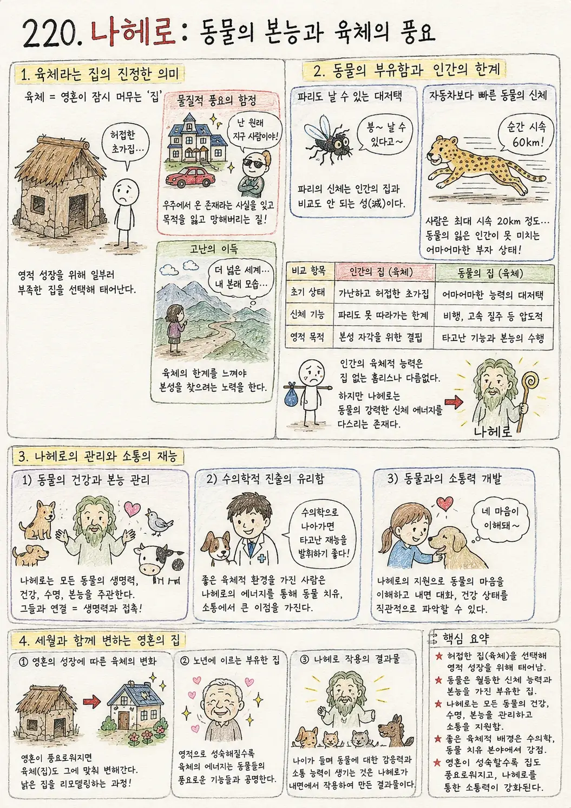

A QUIET PLACE FOR THE MIND
오래된 문장 속에서,
오늘의 나를 만나다.
고전의 지혜를 원문과 해설로 읽고,
나만의 속도로 마음을 살피는 작은 서재.
TODAY’S PAUSE
오늘의 사색
읽은 문장 하나를,
오늘의 삶에 잠시 놓아보세요.
마음에 남은 구절은 무엇인가요? · 서재의 읽기 제안
THE COLLECTION
오늘 펼쳐볼 서재
해당하는 문헌이 없어요. 다른 검색어로 찾아보세요.

FOLLOW YOUR QUESTION
지금, 어떤 질문을
품고 있나요?
문헌의 이름보다 마음속 질문에서 시작해도 좋아요.